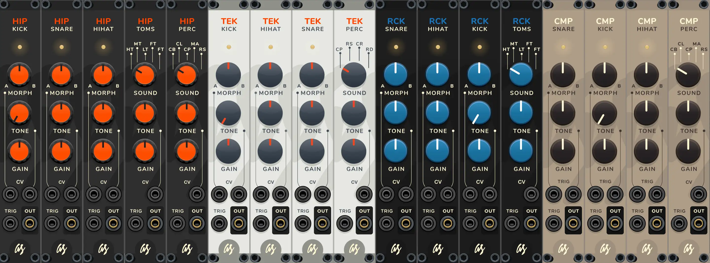
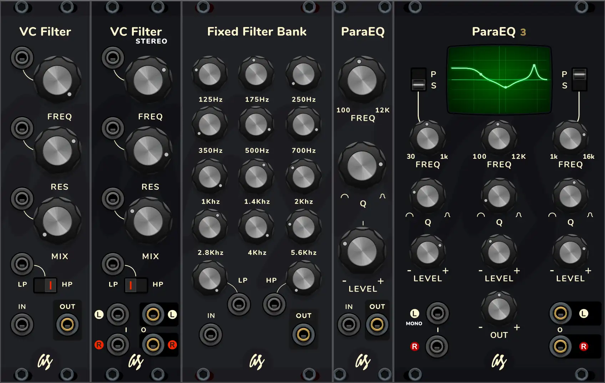

Welcome to AS Custom Works
This is the AS Drums & Filters plugin, a paid but affordable collection of modules for the Virtual Eurorack Studio application VCV Rack 2, made from the perspective of a user and musician, and focused on useful features with a nice graphic user interface and small footprint... because even in a virtual rack, space and looks matter.
Modules:


User manual: AS Drums & Filters
Purchase the module set for only US$20 at the official VCV Rack store: AS Drums & Filters
Changelog
2.1.0
New
- 3-Band Parametric EQ (ParaEQ 3, new module, 14 HP). Stereo EQ with low (30 Hz–1 kHz), mid (100 Hz–12 kHz) and high (1–16 kHz) bands, ±18 dB each, plus an output level of ±12 dB. The low and high bands switch between shelf and peak, and all three have Q. A CRT-style screen shows the total curve and each band. Polyphonic, up to 16 channels per side. Eight factory presets (right-click > Preset) as starting points: Kick Punch, Snare Crack, Hihat Air, Drum Bus Smile, Bass Tighten, De-Mud, Vintage Low Trick and Telephone - Lo-Fi.
- Polyphonic filters and EQ. VC Filter, VC Filter Stereo, Fixed Filter Bank and Parametric EQ process up to 16 channels. The FREQ, RES and MIX CVs of the VC Filters and the LP/HP CVs of Fixed Filter Bank can be polyphonic. VC Filter Stereo uses a mono audio cable for every channel.
- Bypass. When you bypass a filter or EQ in Rack, the audio goes straight through.
- User manuals for every module, on the VCV Library pages.
Changed (may alter how existing patches sound)
- Drum levels: all drum modules are balanced by sound family (kicks, snares and toms; claps and cowbell; hihats and cymbals; rimshot, clave and maracas), so the kits sit at a similar loudness. Existing patches may sound louder or quieter, adjust as needed.
- Kicks / Snares / Hihats: MORPH CV now adds to the knob (it used to replace it). Patches saved with the CV connected load with the knob at zero, so they sound the same. The full range of the morph is balanced now.
- Fixed Filter Bank: the LP and HP knobs follow an exponential scale (11.7 Hz–12 kHz), and their CVs now follow 1V/octave. Existing patches open with the same cutoff, but the CV response is different.
- Parametric EQ: the FREQ knob follows an exponential scale (100 Hz–12 kHz). Existing patches open at the same frequency.
Fixed
- Drums: the start of every hit played a short click.
- Drums: the TONE control reaches its intended frequencies at any sample rate.
- Drum pitch: the samples now play at their correct pitch at any engine sample rate.
- Percs / Toms: switching between sounds doesn't click anymore.
- CMP Percussions: the last two sounds are now named correctly: Low Blip (LB) and High Blip (HB) on the panel and in the tooltip.
- VC Filter / VC Filter Stereo: the LP/HP CV input now changes the mode once per trigger.
- VC Filter / VC Filter Stereo: switching between LP and HP is smooth now, so it doesn't click.
- Tooltips show proper values now: VC Filter cutoff in Hz, Parametric EQ level in dB (±18) and Q, Fixed Filter Bank bands in dB and LP/HP in Hz, and the sound name on Percs and Toms.
- Memory leaks in VC Filter, VC Filter Stereo, Fixed Filter Bank and Parametric EQ.
- Lower CPU use in all modules.
Found an issue and want to report it? You can do it here
Want the free and open source AS modules instead? Get them here: AS modules